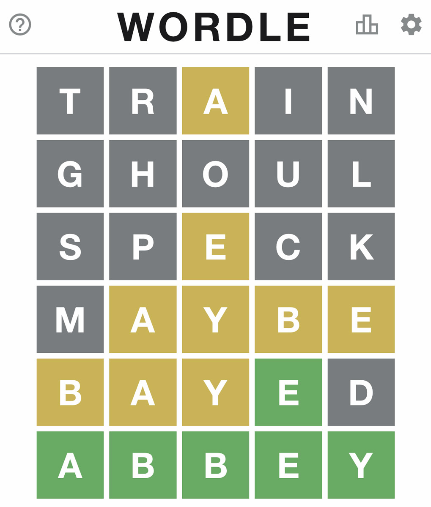
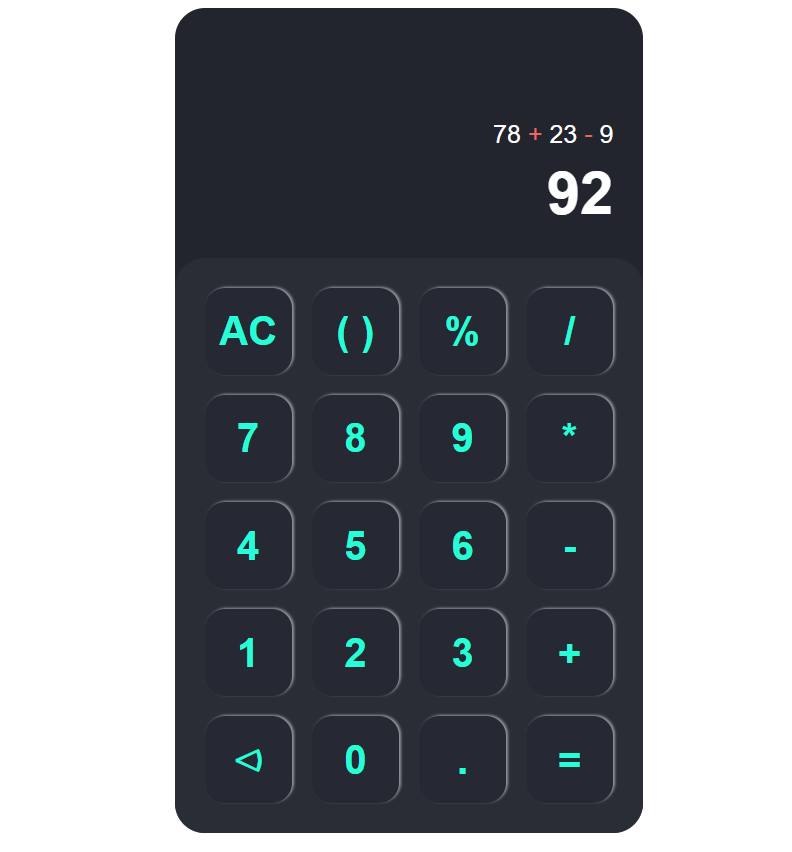
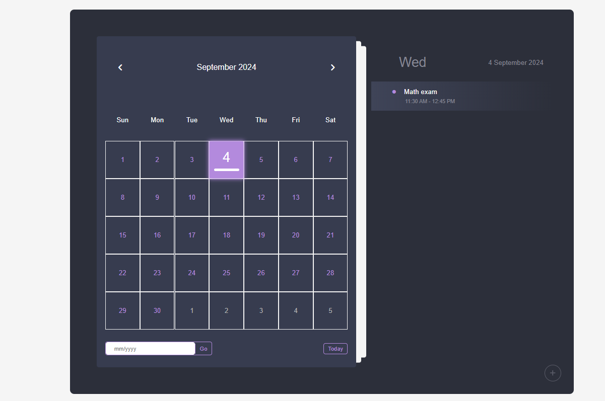

TypeScript
Backend Software Engineer .
Mohammed Al-Omari / Mo Omari
Building systems that
scale & automate.
I'm Mohammed Al-Omari, a Backend Software Engineer in Amman. I design production APIs with NestJS and TypeScript, and wire reliable n8n automation so teams ship faster without fragile glue code.
Engineering playground →
nestjs-n8n-jira-sync.ts
// Event-driven Jira sync via n8n
@Injectable()
export class ProductsService {
async create(dto: CreateProductDto) {
const product = await this.repo.save(dto);
const issue = await this.n8n.trigger({
event: 'jira.create',
payload: product,
});
return { product, jiraKey: issue.key };
}
}
Who I Am
About Mohammed Al-Omari
I'm Mohammed Al-Omari a Backend Software Engineer based in Amman, Jordan, currently building scalable server-side systems at Mobasher Auctions. My core focus is on designing APIs that can grow without becoming a maintenance burden — clean architecture, typed all the way down with TypeScript, and deployed reliably with Docker.
What sets me apart is my investment in workflow automation. I use n8n to bridge system gaps that would otherwise require custom glue code — turning hours of manual work into auditable, resumable pipelines. When I look at a business process, I'm always asking: where is human time being wasted on something a machine could handle?
On the side, I maintain M.GAMES—13 vanilla JS browser builds that keep my frontend instincts sharp.
I hold a BSc in Software Engineering from Jordan University of Science and Technology (GPA: 3.46), and I continuously expand through structured learning — from backend architecture deep-dives to accessibility and performance coursework.
0+
Year Production Backend
0
GitHub Repositories
0
BSc GPA · JUST
∞
Processes Automated
What I Do
Technical Expertise
A full-stack toolkit weighted heavily toward backend systems, data, and automation.
Backend Engineering
Designing resilient, modular server-side applications with NestJS and Express.js — structured, typed, and built to scale.
Workflow Automation
Engineering n8n pipelines that eliminate manual overhead and connect disparate systems — without writing brittle glue code.
Data Engineering
Modeling schemas for correctness and querying for performance — relational and document stores, with TypeORM as the bridge.
Frontend Development
Building accessible, performant UIs in React and Vanilla JS — with an eye on Core Web Vitals and cross-platform consistency.
Where I've Been
Experience
Where I've shipped real systems for real businesses.
Jan 2026 — Present
Backend Software Engineer
Mobasher Auctions · Amman, Jordan
- Designing and deploying highly available server-side applications with NestJS and Node.js, forming the scalable backbone for core auction business operations.
- Engineering complex internal workflows via n8n and Docker — bridging system gaps, reducing manual overhead, and accelerating development lifecycles.
- Auditing and restructuring database schemas and query execution plans using TypeORM across MySQL and MongoDB for improved throughput with minimal downtime.
Mar 2024 — May 2024
Frontend Engineer (Intern)
Zain Headquarters · Amman, Jordan
- Developed responsive web interfaces using HTML, CSS, and JavaScript, ensuring technical execution aligned with design and stakeholder requirements.
- Championed strict adherence to web accessibility, layout, and performance standards across varied platforms and device sizes.
What I've Built
Projects
Production-minded builds — not just tutorials.
TypeScript
SyncFlow — Event-Driven Orders
C#
Smoking Cessation Clinic

JavaScriptWordle Engine
JavaScript
TDEC Company Website

JavaScriptAdvanced Calculator

JavaScriptCalendar Task Manager
Engineering Playground
Vanilla JS, zero frameworks
I build backends for work. I build browser games in vanilla JS to stress-test logic, animation, and performance—the same way I stress-test APIs. Thirteen builds: Wordle, Tetris, Tower, Connect 4, and more.
Enter M.GAMES
Get In Touch
Let's build something solid.
Open to backend engineering roles, technical collaborations, and interesting architecture conversations. I respond promptly.
Mohammed Al-Omari Backend Software Engineer Amman, Jordan mo.omari862@gmail.com